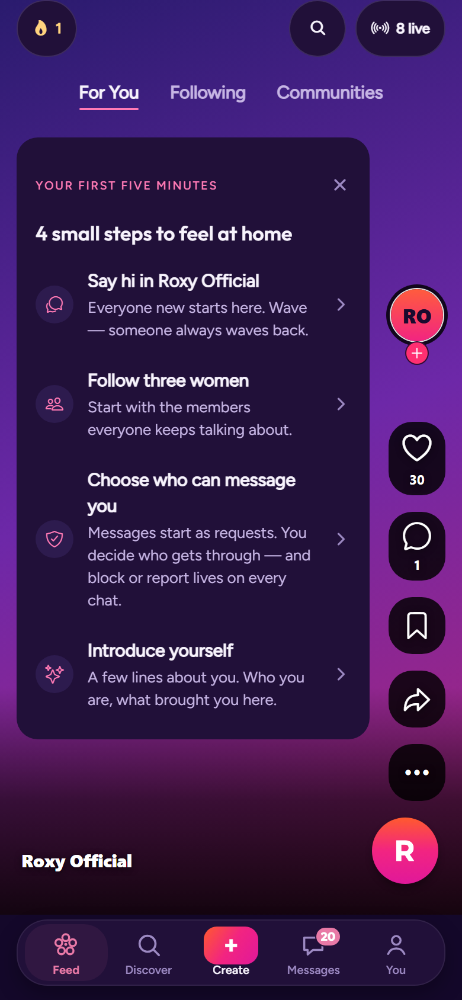

v0, live build (20 Oct 2026)
roxy.expo.app, For you after sign-in. A checklist card under twenty pieces of chrome; the FAB sits on the rail.

Proposed: double-tap, 180 ms into the burst
The photo is the screen. A heart pops where the thumb was; the rail button squishes and shows her reaction. Roxy sits in her own lane under the rail.
20:31
For youFollowingCommunities
8 live
I
Inês R. · 2 h
in Lisboa Sapphic Walks
Took the long way home past Bica. Saturday walk starts here at ten, who’s in?
Proposed: long-press the reaction button
The six reactions from chat spring out in a row; slide and let go to pick. Roxy tucks into the edge while the picker is open.
20:31
For youFollowingCommunities
8 live
❤️😂😮😢😡💜
I
Inês R. · 2 h
in Lisboa Sapphic Walks
Took the long way home past Bica. Saturday walk starts here at ten, who’s in?